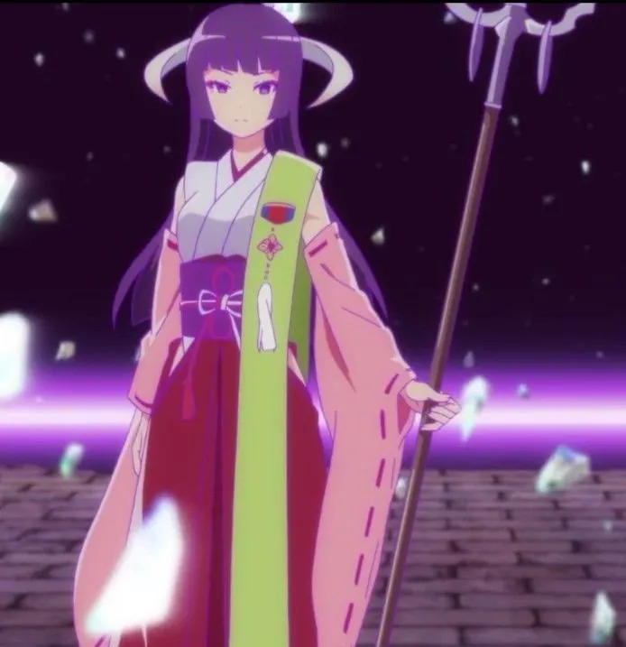
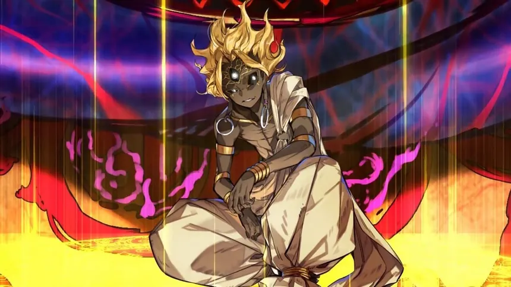
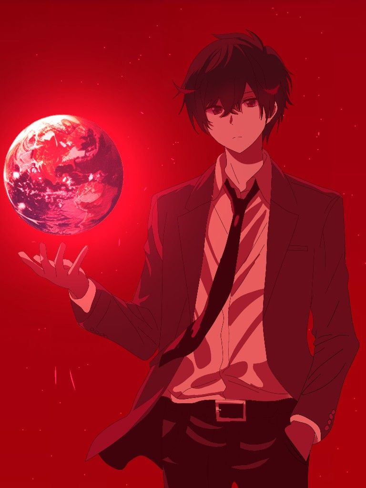
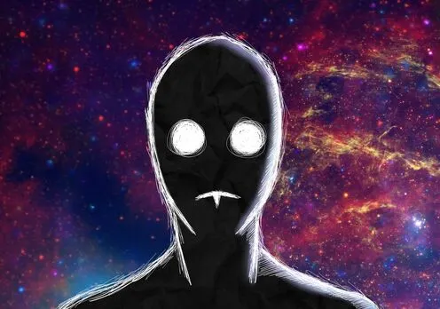
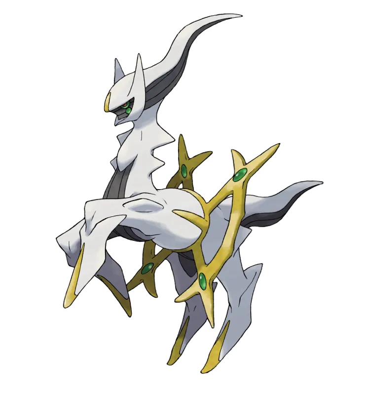

The Celestial Creator

Tenchi Masaki
Poderes:
Omnipotencia absoluta: controla todos los planos de existencia. Omnisciencia y omnipresencia. Puede borrar, recrear o reescribir la existencia con solo pensarlo. Está por encima de todos los seres de su multiverso.
Tier: Omnipotente / Outerversal.
Omnipotencia absoluta: controla todos los planos de existencia. Omnisciencia y omnipresencia. Puede borrar, recrear o reescribir la existencia con solo pensarlo. Está por encima de todos los seres de su multiverso.
Tier: Omnipotente / Outerversal.
The Infinite Witch

Featherine Augustus Aurora
Poderes:
Metaexistencia: es una autora dentro de la historia. Reescribe narrativas enteras como si fueran libros. Omnisciencia y manipulación total de la causalidad. Inmortalidad conceptual y poder ilimitado dentro de su obra.
Tier: Omniversal alto / Outerversal.
Metaexistencia: es una autora dentro de la historia. Reescribe narrativas enteras como si fueran libros. Omnisciencia y manipulación total de la causalidad. Inmortalidad conceptual y poder ilimitado dentro de su obra.
Tier: Omniversal alto / Outerversal.
The Evil of the End

Hajun
Poderes:
Control total sobre la Ley de su Taikyoku (voluntad suprema). Capacidad de borrar multiversos con su mera existencia. Es una “absoluta singularidad”, inmune a hax inferiores. Autoridad superior a casi todos los dioses de su verso.
Tier: Outerversal alto.
Control total sobre la Ley de su Taikyoku (voluntad suprema). Capacidad de borrar multiversos con su mera existencia. Es una “absoluta singularidad”, inmune a hax inferiores. Autoridad superior a casi todos los dioses de su verso.
Tier: Outerversal alto.
The Devil Itself

Akuto Sai
Poderes:
Capacidad de reescribir la realidad a nivel universal y conceptual. Control sobre el pasado, presente y futuro. Autoconciencia de ser una entidad narrativa. Inmortalidad y omnipotencia local.
Tier: Omniversal bajo.
Capacidad de reescribir la realidad a nivel universal y conceptual. Control sobre el pasado, presente y futuro. Autoconciencia de ser una entidad narrativa. Inmortalidad y omnipotencia local.
Tier: Omniversal bajo.
The Hidden Lord

Yogiri Takatou
Poderes:
Habilidad absoluta de matar instantáneamente cualquier cosa (incluso conceptos y seres fuera de la realidad). Ignora resistencias, durabilidad y escalas de poder. Inmune a ataques hasta de nivel divino.
Tier: Omniversal bajo (Hax absoluto).
Habilidad absoluta de matar instantáneamente cualquier cosa (incluso conceptos y seres fuera de la realidad). Ignora resistencias, durabilidad y escalas de poder. Inmune a ataques hasta de nivel divino.
Tier: Omniversal bajo (Hax absoluto).
The Elder God

Elder God Demonbane
Poderes:
Poder comparable a los Primordiales Lovecraftianos. Manipulación temporal, dimensional y conceptual. Puede borrar universos y multiversos completos. Combate contra seres omnipresentes como Nyarlathotep.
Tier: Outerversal medio.
Poder comparable a los Primordiales Lovecraftianos. Manipulación temporal, dimensional y conceptual. Puede borrar universos y multiversos completos. Combate contra seres omnipresentes como Nyarlathotep.
Tier: Outerversal medio.
The Spiral Hero

Simon
Poderes:
Control de la energía espiral, capaz de crear universos. Pilota mechas de escala galáctica y superior. Manipulación espacio-temporal y dimensional. Super Tengen Toppa Gurren Lagann es más grande que galaxias.
Tier: Multiversal extremo a Outerversal bajo.
Control de la energía espiral, capaz de crear universos. Pilota mechas de escala galáctica y superior. Manipulación espacio-temporal y dimensional. Super Tengen Toppa Gurren Lagann es más grande que galaxias.
Tier: Multiversal extremo a Outerversal bajo.
Chaos Creator

Rimuru Tempest
Poderes:
Absorción, copia de habilidades, manipulación conceptual. Inmortalidad, control de almas y espacio-tiempo. Habilidades automáticas de defensa y contraataque. Forma definitiva: Dios Demonio verdadero.
Tier: Multiversal alto a Omniversal bajo (depende de versión LN).
Absorción, copia de habilidades, manipulación conceptual. Inmortalidad, control de almas y espacio-tiempo. Habilidades automáticas de defensa y contraataque. Forma definitiva: Dios Demonio verdadero.
Tier: Multiversal alto a Omniversal bajo (depende de versión LN).
The Unconscious God

Haruhi Suzumiya
Poderes:
Capacidad de reescribir la realidad sin saberlo. Crea y destruye universos completos por sus emociones. Manipula espacio, tiempo y existencia de forma inconsciente. Es, literalmente, una “diosa inconsciente” en su universo.
Tier: Universal a Multiversal alto.
Capacidad de reescribir la realidad sin saberlo. Crea y destruye universos completos por sus emociones. Manipula espacio, tiempo y existencia de forma inconsciente. Es, literalmente, una “diosa inconsciente” en su universo.
Tier: Universal a Multiversal alto.
The Witch of Miracles

Frederica Bernkastel
Poderes:
Manipulación de probabilidades y universos paralelos. Inmortalidad conceptual. Capacidad de alterar y observar líneas temporales infinitas.
Tier: Multiversal alto.
Manipulación de probabilidades y universos paralelos. Inmortalidad conceptual. Capacidad de alterar y observar líneas temporales infinitas.
Tier: Multiversal alto.
The Witch of Certainty

Lambdadelta
Poderes:
Control sobre certeza absoluta. Poder casi igual al de Bernkastel, con enfoque más directo. Puede asegurar que un resultado ocurra sin importar nada.
Tier: Multiversal alto.
Control sobre certeza absoluta. Poder casi igual al de Bernkastel, con enfoque más directo. Puede asegurar que un resultado ocurra sin importar nada.
Tier: Multiversal alto.
The Immortal King

Wang Ling
Poderes:
Destruye universos con un parpadeo. Inmortalidad, regeneración infinita, control del tiempo y alma. Poder sellado para no destruir el mundo por accidente.
Tier: Multiversal muy alto.
Destruye universos con un parpadeo. Inmortalidad, regeneración infinita, control del tiempo y alma. Poder sellado para no destruir el mundo por accidente.
Tier: Multiversal muy alto.
The Demon King of Tyranny

Anos Voldigoad
Poderes:
Resurrección instantánea, destrucción de almas, manipulación temporal. Control sobre la muerte y la magia universal. Poder abrumador y hax mágicos.
Tier: Multiversal.
Resurrección instantánea, destrucción de almas, manipulación temporal. Control sobre la muerte y la magia universal. Poder abrumador y hax mágicos.
Tier: Multiversal.
The Perfect Human

Medaka Kurokami
Poderes:
Copia y perfecciona cualquier habilidad instantáneamente. Resistencia, fuerza y velocidad sobrehumanas. Habilidades meta (interacción con narrativa).
Tier: Universal a Multiversal bajo.
Copia y perfecciona cualquier habilidad instantáneamente. Resistencia, fuerza y velocidad sobrehumanas. Habilidades meta (interacción con narrativa).
Tier: Universal a Multiversal bajo.
The King of All

Zeno
Poderes:
Borra universos con un pensamiento. Autoridad máxima en el multiverso. No tiene debilidades conocidas dentro de su obra.
Tier: Multiversal extremo.
Borra universos con un pensamiento. Autoridad máxima en el multiverso. No tiene debilidades conocidas dentro de su obra.
Tier: Multiversal extremo.
The Archenemy of Evolution

Anti Spiral
Poderes:
Manipulación de dimensiones, realidades y energía espiral. Inmortalidad y control sobre la existencia de su raza. Puede borrar galaxias enteras con facilidad.
Tier: Multiversal.
Manipulación de dimensiones, realidades y energía espiral. Inmortalidad y control sobre la existencia de su raza. Puede borrar galaxias enteras con facilidad.
Tier: Multiversal.
The Original One

Arceus
Poderes:
Creador del universo Pokémon. Control sobre tiempo, espacio y antimateria a través de sus creaciones. Inmortalidad y manipulación divina.
Tier: Universal a Multiversal.
Creador del universo Pokémon. Control sobre tiempo, espacio y antimateria a través de sus creaciones. Inmortalidad y manipulación divina.
Tier: Universal a Multiversal.
Almighty Wish-granting Device

Void Shiki
Poderes:
Control conceptual sobre la “Muerte” y el “Vacío”. Puede matar conceptos y borrar existencias fundamentales. Inmortalidad espiritual.
Tier: Universal a Multiversal bajo.
Control conceptual sobre la “Muerte” y el “Vacío”. Puede matar conceptos y borrar existencias fundamentales. Inmortalidad espiritual.
Tier: Universal a Multiversal bajo.
The One Punch Man
Saitama
Poderes:
Fuerza física infinita (por gag literal de la obra). Velocidad incalculable, reflejos instantáneos. Resistencia y durabilidad absurdamente altas. Capacidad de derrotar a cualquier enemigo con un solo golpe (dentro de su narrativa).
Tier: Variable — dentro de su universo, es “invencible” (gag omnipotente).
Fuerza física infinita (por gag literal de la obra). Velocidad incalculable, reflejos instantáneos. Resistencia y durabilidad absurdamente altas. Capacidad de derrotar a cualquier enemigo con un solo golpe (dentro de su narrativa).
Tier: Variable — dentro de su universo, es “invencible” (gag omnipotente).
The Goddess of Hope
Madoka Kaname
Poderes:
Omnipresencia y manipulación de la existencia. Borra la ley de causalidad misma y reescribe el universo. Control absoluto sobre espacio, tiempo, vida y muerte. Se convierte en una entidad conceptual que trasciende la realidad.
Tier: Omniversal bajo.
Omnipresencia y manipulación de la existencia. Borra la ley de causalidad misma y reescribe el universo. Control absoluto sobre espacio, tiempo, vida y muerte. Se convierte en una entidad conceptual que trasciende la realidad.
Tier: Omniversal bajo.
God of the Underworld

Hades
Poderes:
Dios inmortal con control sobre el inframundo y la muerte. Manipulación de almas, oscuridad y dimensiones infernales. Teletransportación, durabilidad divina, velocidad FTL+. Reencarna en cuerpos humanos para evitar destrucción total.
Tier: Multiversal alto (en el verso de Saint Seiya).
Dios inmortal con control sobre el inframundo y la muerte. Manipulación de almas, oscuridad y dimensiones infernales. Teletransportación, durabilidad divina, velocidad FTL+. Reencarna en cuerpos humanos para evitar destrucción total.
Tier: Multiversal alto (en el verso de Saint Seiya).
Savior of the Cosmos

Usagi Tsukino
Poderes:
Manipulación cósmica, espacio-tiempo y realidad. Inmortalidad y regeneración casi absoluta. Poder de purificar seres y destruir entidades conceptuales. En su forma de Sailor Cosmos, controla el poder de todo el Cosmos.
Tier: Omniversal bajo a alto (en forma Sailor Cosmos).
Manipulación cósmica, espacio-tiempo y realidad. Inmortalidad y regeneración casi absoluta. Poder de purificar seres y destruir entidades conceptuales. En su forma de Sailor Cosmos, controla el poder de todo el Cosmos.
Tier: Omniversal bajo a alto (en forma Sailor Cosmos).
God-King

Aizen Sosuke
Poderes:
Kyōka Suigetsu: control absoluto de los sentidos. Inmortalidad (tras fusión con Hōgyoku). Poder espiritual de nivel divino.
Tier: Planetario a Estelar (canónicamente).
Kyōka Suigetsu: control absoluto de los sentidos. Inmortalidad (tras fusión con Hōgyoku). Poder espiritual de nivel divino.
Tier: Planetario a Estelar (canónicamente).
Rabbit Goddess
Kaguya Ōtsutsuki
Poderes:
Control de dimensiones. Inmortalidad y chakra ilimitado. Técnicas de absorción y manipulación de la realidad ninja.
Tier: Planetario a Universal bajo.
Control de dimensiones. Inmortalidad y chakra ilimitado. Técnicas de absorción y manipulación de la realidad ninja.
Tier: Planetario a Universal bajo.
Sword Saint
Reinhard van Astrea
Poderes:
Posee incontables bendiciones divinas que lo protegen de prácticamente todo (inmortalidad condicional, resistencia absoluta, curación, suerte extrema, fuerza y velocidad sobrehumanas). Su técnica con la espada es perfecta.
Tier: Universal bajo / Hax narrativo — difícil de superar dentro de su obra; su invencibilidad proviene más de su rol que de destrucción cósmica real.
Posee incontables bendiciones divinas que lo protegen de prácticamente todo (inmortalidad condicional, resistencia absoluta, curación, suerte extrema, fuerza y velocidad sobrehumanas). Su técnica con la espada es perfecta.
Tier: Universal bajo / Hax narrativo — difícil de superar dentro de su obra; su invencibilidad proviene más de su rol que de destrucción cósmica real.
The One
Escanor
Poderes:
Su fuerza crece con la posición del sol, alcanzando su punto máximo al mediodía con “The One”, estado en el que posee poder casi divino por un corto periodo.
Tier: Planetario alto (pico) → Continental — muy poderoso físicamente, pero con límite temporal.
Su fuerza crece con la posición del sol, alcanzando su punto máximo al mediodía con “The One”, estado en el que posee poder casi divino por un corto periodo.
Tier: Planetario alto (pico) → Continental — muy poderoso físicamente, pero con límite temporal.
The Golden King
Giorno Giovanna
Poderes:
Puede revertir cualquier acción a un “estado cero”, anulando causas y consecuencias. Su defensa es automática e imposible de evitar para la mayoría. Puede crear bucles de muerte y manipular la vida misma.
Tier: Multiversal bajo / Alta defensa conceptual — no es destructor, pero casi imposible de derrotar si el oponente no tiene hax superior.
Puede revertir cualquier acción a un “estado cero”, anulando causas y consecuencias. Su defensa es automática e imposible de evitar para la mayoría. Puede crear bucles de muerte y manipular la vida misma.
Tier: Multiversal bajo / Alta defensa conceptual — no es destructor, pero casi imposible de derrotar si el oponente no tiene hax superior.
The Grand Priest

Dai Shinkan
Poderes:
Control total sobre espacio-tiempo multiversal, combate a velocidades absurdas, energía divina, manipulación de realidad y jerarquía sobre dioses de destrucción.
Tier: Multiversal alto — solo Zeno y seres conceptuales están por encima de él en ese canon.
Control total sobre espacio-tiempo multiversal, combate a velocidades absurdas, energía divina, manipulación de realidad y jerarquía sobre dioses de destrucción.
Tier: Multiversal alto — solo Zeno y seres conceptuales están por encima de él en ese canon.
The Evil of the End

Satoru Gojo
Poderes:
Su técnica Limitless controla el espacio entre él y su oponente, creando una barrera infinita. Posee gran velocidad, reflejos, técnicas devastadoras como Purple y un Domain Expansion que paraliza la mente del enemigo.
Tier: Continental — abrumador en su contexto, aunque no escala a niveles cósmicos.
Su técnica Limitless controla el espacio entre él y su oponente, creando una barrera infinita. Posee gran velocidad, reflejos, técnicas devastadoras como Purple y un Domain Expansion que paraliza la mente del enemigo.
Tier: Continental — abrumador en su contexto, aunque no escala a niveles cósmicos.
Golden Queen

Sailor Galaxia
Poderes:
Control de energía estelar, robo de almas y poderes, destrucción de sistemas estelares, manipulación cósmica y liderazgo sobre un ejército galáctico.
Tier: Multiversal alto — una de las entidades más destructivas de su universo.
Control de energía estelar, robo de almas y poderes, destrucción de sistemas estelares, manipulación cósmica y liderazgo sobre un ejército galáctico.
Tier: Multiversal alto — una de las entidades más destructivas de su universo.